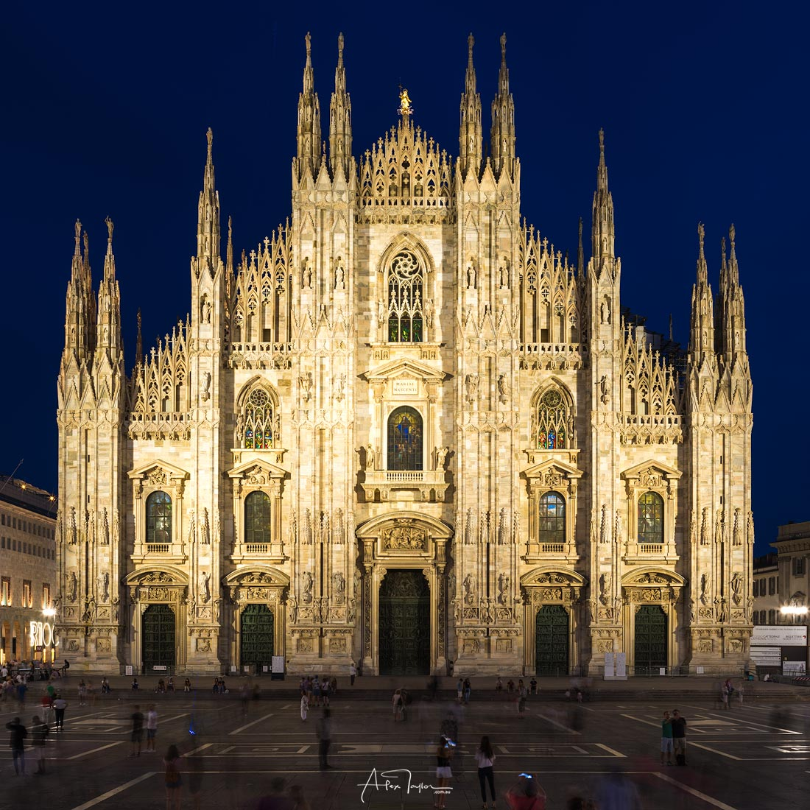
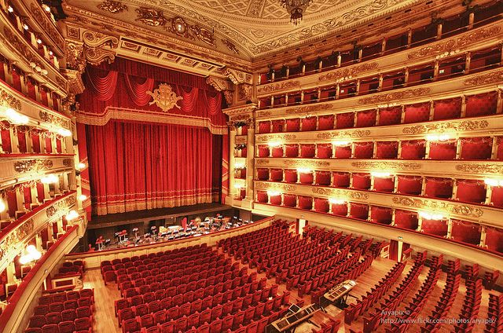
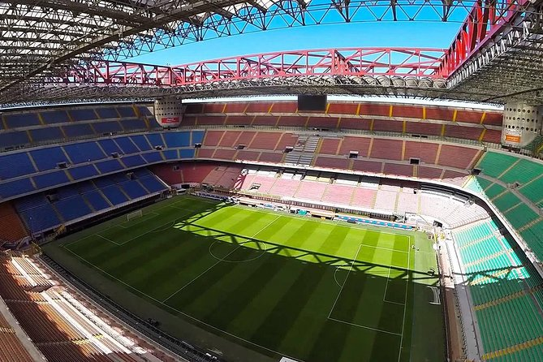

Milaan heeft maar liefst vijf miljoen inwoners en heeft veel te bieden voor voetballiefhebbers, modellen, ontwerpers, bouwkunstliefhebbers en nieuwsgierige cultuurliefhebbers. We gaan het hier hebben over bezienswaardigheden, beste plekken om te eten, shoppingmalls en wat je echt moet zien als je in Milaan bent.
Bezienswaardigheden:
- De Dom van Milaan (Duomo)
Op het plein van Milaan staat de prachtige immense gotische kathedraal, il Duomo. De Dom is maar liefst 109.641 vierkante meter groot. Om deze prachtige kathedraal te bekijken kan je naar het plein gaan van Milaan, maar je hebt ook de optie om in de katherdaal en op het dakterras van de kathedraal te gaan. Om op het dak van de katherdaal te komen moet je wel betalen, maar ik adviseer u om dit zeker te doen. Om met de lift naar boven te gaan is 13 euro en om met de trap te gaan is 9 euro, de trap heeft 500 treden. De katherdaal is elke dag geopend van 8:00 tot 19:00. Denk eraan dat je alleen gepast in de kathedraal mag, dus denk aan bedekte schouders en knieën. Er zijn maar liefst 3400 beelden, 135 waterspuwers en 700 figuren in en om de kathedraal te zien.
- Teatro alla scala
Zelfs als je niet van opera houdt is een bezoek aan Teatro alla Scala, ook wel La Scala, meer dan de moeite waard. Het is een neoclassicistisch theatergebouw die in het midden van het centrum van Milaan staat. La Scala werd van 1775 tot 1778 gebouwd en heeft ruim 2800 zitplaatsen. Het is vaak moeilijk om er kaartjes van te krijgen, omdat het vaak al maanden van te voren uitverkocht is. Van 2002 tot 2004 was het theatergebouw gesloten voor renovatie, door de grote beschadiging in de tweede wereldoorlog. Je kan er ook het museum bezoeken, het kaartje zal dan rond de 7 euro kosten.
- San Siro
San Siro is een voetbalstadion in Milaan. Het stadion wordt gedeeld door twee voetbalclubs, AC Milaan en FC Internazionale Milano (Inter). Hoewel ze rivalen zijn, delen ze een voetbalstadion. De officiële naam van het stadion is Stadio Giuseppe Meazza. In het stadion passen ruim 85.000 toeschouwers. Ze begonnen met het bouwen van het stadion in 1926. Zoals in bijna elk stadion is er een rondleiding beschikbaar, na afloop zou je ook het museum kunnen bezoeken. Als je in Milaan bent en een voetbalfan bent, is het zeker leuk om er kaartjes voor proberen te krijgen
